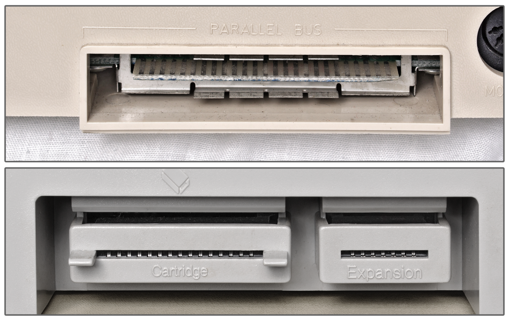

| The Atari 130XE would be released in
April 1985 and would offer the same design features as the
65XE computer. This would include the same cost
reduced redesign of the Atari Inc 800XLF design, but the
130XE would be based on a 128K version of the 800XLF.
The new system would also include an ECI
port next to the Cartridge port located on the back panel of
the computer system. The ECI Port stood for:
Enhanced Cartridge Interface. This port provided
the additional lines that the original Atari Inc PBI
provided to the Atari XL line of computers. PBI
stood for Parallel Bus Interface. This was a
high speed direct bus interface for the XL computers that
would allow smart expansion devices and memory modules to be
plugged into the back of the XL systems to increase memory,
provide alternative video cards and even processor cards.

The ECI would provide those very same
capabilities to the XE line of computers.
Originally Atari Inc had planned to release a device in the
3rd quarter of 1984 called the
Atari 1090 XL Expansion System. This was a 5
slot PBI card cage and would've allowed Atari to sell
numerous expansion cards for its XL line of computers.
The device was canceled and an XE version was never offered.
So without a standardized means of adding expansion devices
to the XL or XE series of computers, several 3rd party
companies and in later years, hobbyists, began to develop
and sell hard drive interfaces, multi-function boxes, memory
expanders and even floppy drive controllers.
|